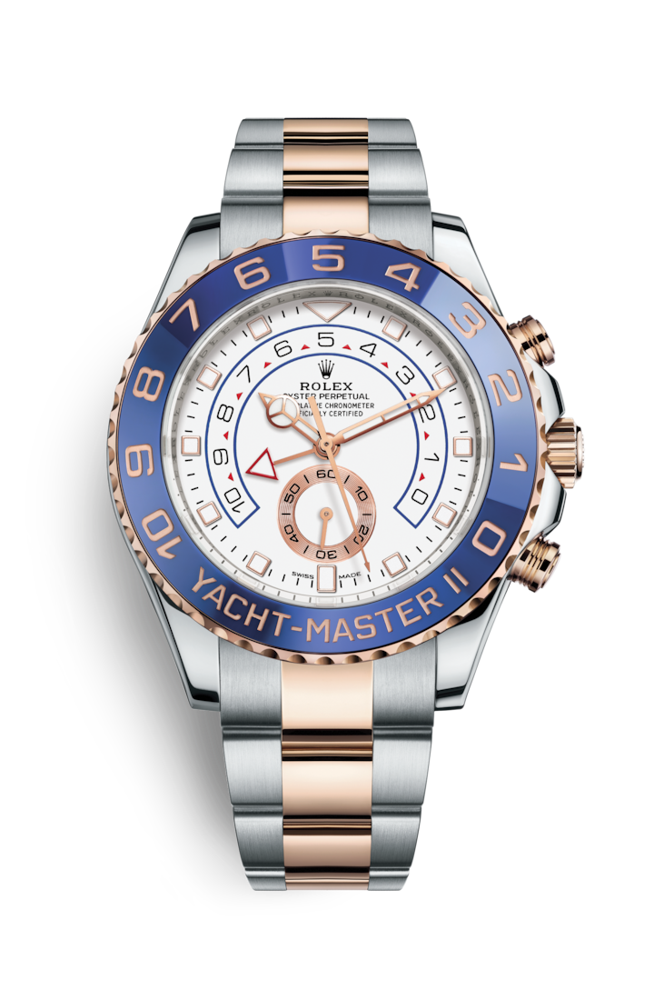

"Характеристика модели"
Rolesor
Золото ценится за его блеск и благородный характер. Сталь олицетворяет собой прочность и надежность. Вместе они образуют очень выгодное сочетание. Биметаллическое исполнение Rolesor, фирменная особенность Rolex, появилось в начале 1930‑х годов, а сама торговая марка – в 1933 году. Сегодня это одна из ключевых особенностей коллекции Oyster.
Белый циферблат
Часы Yacht‑Master II отныне оснащены новым циферблатом и характерными для профессиональных часов Rolex стрелками, которые улучшают читаемость показаний и преображают их внешний вид. Для простоты использования новый циферблат имеет треугольную накладку на отметке 12 часов и прямоугольную – на отметке 6 часов. Часовая стрелка четко отличается от минутной благодаря люминесцентному кругу. Счетчик обратного отсчета часов Yacht‑Master II программируется на отрезке времени от 1 до 10 минут. Запрограммированное значение запоминается механизмом счетчика, который при повторном запуске возвращается к изначально установленному отрезку времени. После запуска счетчик обратного отсчета может быть синхронизирован прямо на ходу, что позволяет точно вписаться в официальный счет гонки.
Браслет Oyster
Браслет Oyster, отличающийся прочностью и удобством, – это совершенное сочетание формы и функциональности, эстетики и технологических достижений. Он оснащен застежкой Oysterlock, предупреждающей случайное расстегивание, а также оригинальной застежкой Glidelock, которая позволяет увеличить длину браслета без помощи каких-либо устройств, тем самым обеспечивая удобное и надежное крепление часов поверх водолазного костюма.
Механизм 4161
Часы Yacht‑Master II отныне оснащены новым циферблатом и характерными для профессиональных часов Rolex стрелками, которые улучшают читаемость показаний и преображают их внешний вид. Для простоты использования новый циферблат имеет треугольную накладку на отметке 12 часов и прямоугольную – на отметке 6 часов. Часовая стрелка четко отличается от минутной благодаря люминесцентному кругу. Счетчик обратного отсчета часов Yacht‑Master II программируется на отрезке времени от 1 до 10 минут. Запрограммированное значение запоминается механизмом счетчика, который при повторном запуске возвращается к изначально установленному отрезку времени. После запуска счетчик обратного отсчета может быть синхронизирован прямо на ходу, что позволяет точно вписаться в официальный счет гонки.
"Полное описание модели"
Часы Rolex Yacht-Master и Yacht-MasterII воплощают морской дух, сочетая великолепный дизайн с тщательно отобранными материалами, обеспечивающими высокую точность и функциональность. Часы Yacht-Master, вдохновленные богатым наследием,тесно связывающим компанию Rolex и парусный спорт 1950-х годов,- великолепный образец функциональности и стиля, а яхтенный хронограф Yacht-MasterII, разработанный с помощью лучших технологий Rolex, создан специально для парусных гонок.
|